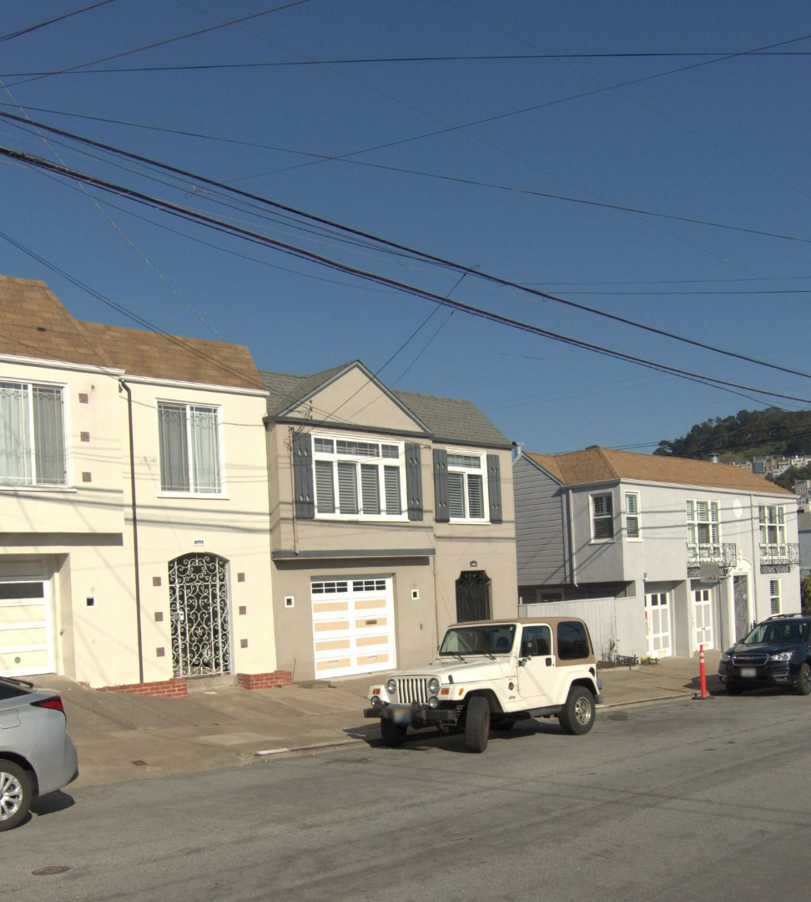
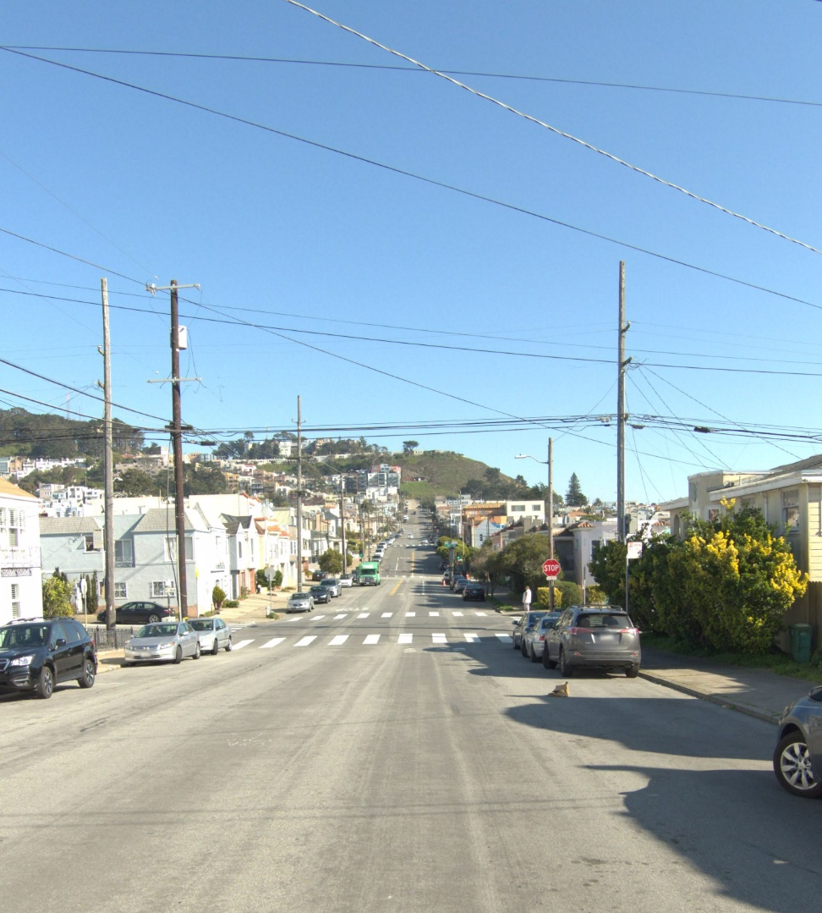
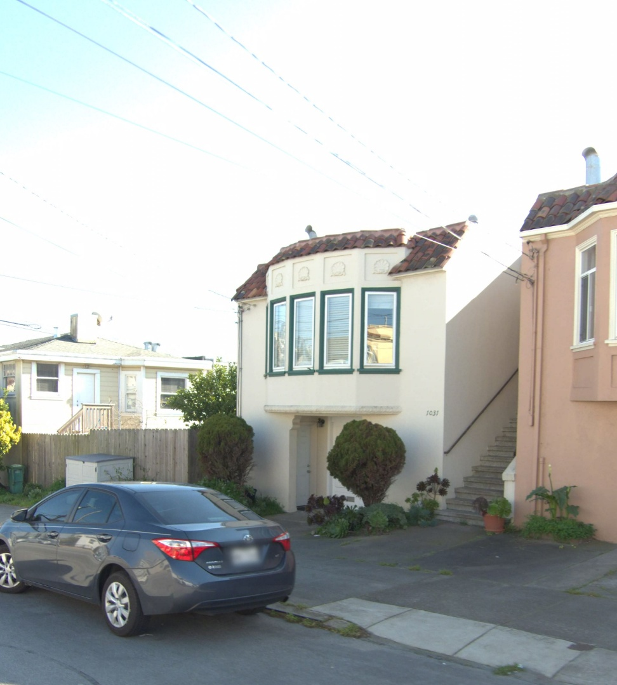
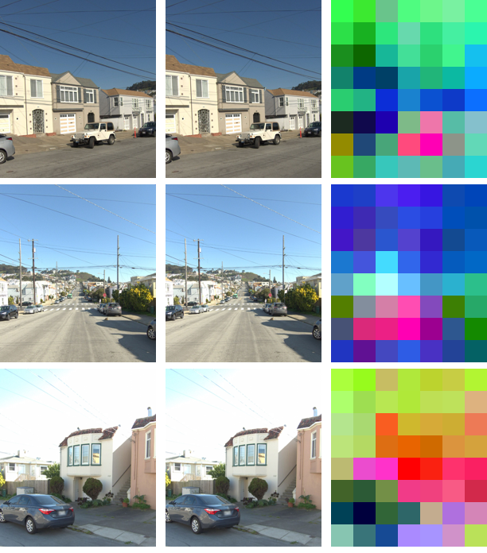
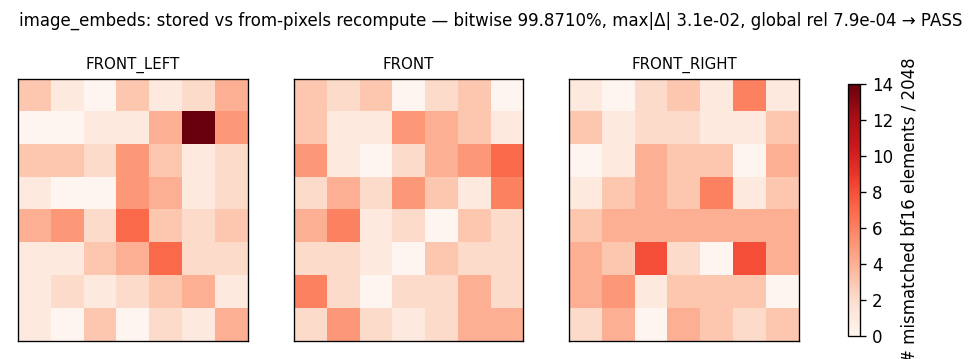
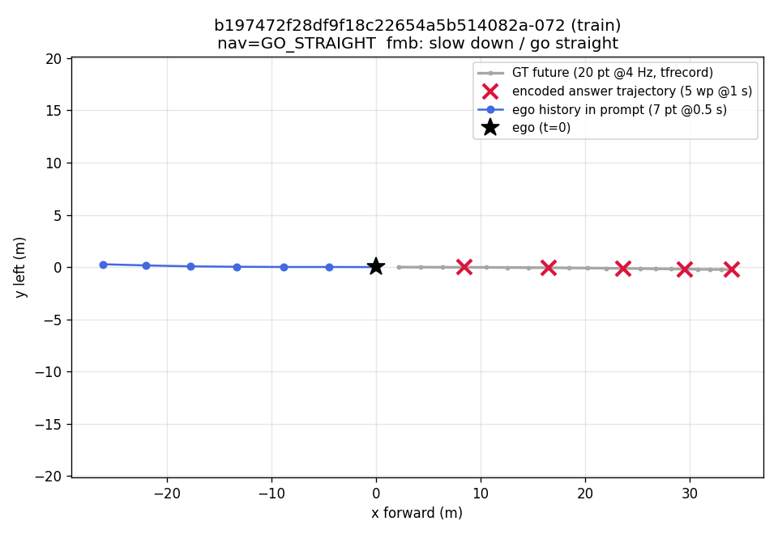
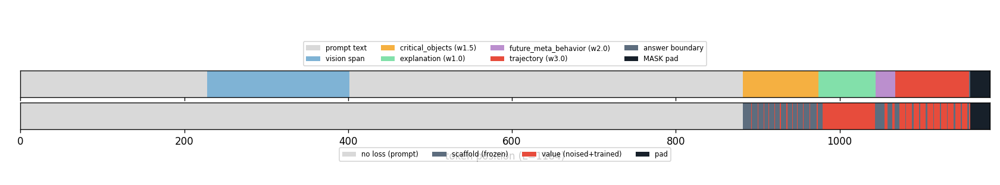
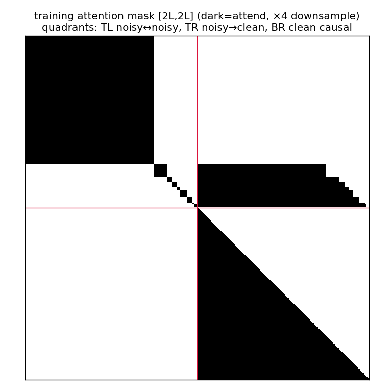

样本 03 train split ✅ 28/28 checks PASS
b197472f28df9f18c22654a5b514082a-072 · v2 AR(train)shard 0
row 3 · L=1184 · 答案区间 [882, 1159) · 7 blocks
· 每图 [56, 56, 56] merged tokens · pixel_values [672,1176] f16
· image_embeds [168,2048] bf16 · MASK 尾部 pad 24
1 · 原始输入:三张前视相机图

image1 · FRONT_LEFT 左前(原始 JPEG,1920×1280)

image2 · FRONT 正前(原始 JPEG,1920×1280)

image3 · FRONT_RIGHT 右前(原始 JPEG,1920×1280)
2 · 三列各是什么:JPEG │ pixel_values⁻¹ │ PCA(image_embeds)
每行一台相机,三列来自不同字段:
左 = 原始 JPEG(仅缩放显示);
中 = 从 pixel_values 反演重建——预处理(缩放 + CLIP 归一化 + patch 化)是
可逆的,逆变换逐像素还原。这一列只用 pixel_values,和 embedding 无关;
右 = image_embeds 的 top-3 PCA→RGB。注意 embedding 过了 ViT 是不可逆的,
无法重建回像素——右列只是把 56 个 [2048] 向量投影到 3 维当颜色看(语义相近区域颜色相近、
空间结构与图像对应),用来直观确认"embeds 编码的就是这张图",不是重建。
所以中、右两列分别独立验证了 v2 记录里两个图像字段的内容。

embeds 数值验证:从存储像素重新过 frozen ViT(fp32 highest → bf16),与存储的 embeds 逐元素比

bitwise 一致 99.8710% 的含义:image_embeds 是
[168 token × 2048 维] = 344,064 个 bf16 数;这是其中16-bit 位模式逐位完全相同的比例
(剩下 ~0.15% ≈ 500 个数有差)。
为什么不是 100%:构建数据集用的是 jit 编译版 ViT,这里复验用 eager 版——两个 XLA 程序 fp32 累加顺序不同,有 ~1e-5 量级微差;转 bf16(仅 ~2–3 位有效数字)时,落在舍入边界附近的 值被舍到相邻的那一个 bf16 档。这 ~0.15% 全部被验证为相邻舍入(≤1.5× 自身 bf16 ulp 或 |Δ|≤2e-3),max|Δ| = 3.12e-02;热图无空间结构 → 纯数值噪声,非内容差异。 bf16 级全局 rel 7.91e-04(仅诊断,不设门限)。
判别力:若存的是错图/错行,两组 embeds 基本不相关,bitwise 一致率会崩到 ~0%,而不是 99.8%。
3 · 原始输入:文本 prompt(含数值自车历史)与训练目标
展开 prompt 原文(Stage-1 生成,navigation = GO_STRAIGHT)
You are an expert autonomous driving agent.
Task 1: Critical Object Detection
For each class below, answer "yes" or "no" to indicate whether it affects the ego vehicle’s behavior or future trajectory:
[nearby_vehicle, pedestrian, cyclist, construction, traffic_element, weather_condition, road_hazard, emergency_vehicle, animal, special_vehicle, conflicting_vehicle, door_opening_vehicle]
Task 2: Scene Reasoning
Predict the future behavior of the identified critical objects and explain how the identified critical objects or conditions affect the ego vehicle’s next 3-second trajectory.
Task 3: Meta-Behavior Prediction
Predict the ego vehicle’s future meta-driving behavior:
- speed ∈ {keep, accelerate, decelerate, stop, other}
- command ∈ {straight, yield, left_turn, right_turn, lane_follow, lane_change_left, lane_change_right, reverse, overtake, other}
Task 4: Trajectory Prediction
Predict the optimal 5-second future trajectory (5 waypoints, 1 s intervals).
Input:
- <image>: three front-view frames from left front, center front, right front cameras.
- High-level navigation command: GO_STRAIGHT
- Historical ego state: Provided are the previous ego vehicle status recorded over the last 3.0 seconds (at 0.5-second intervals).(t-3.0s) [-26.08, 0.27], Acceleration: X 0.13, Y 0.02 m/s², Velocity: X 8.25, Y -0.23 m/s,; (t-2.5s) [-21.95, 0.16], Acceleration: X 0.11, Y 0.01 m/s², Velocity: X 8.53, Y -0.21 m/s,; (t-2.0s) [-17.68, 0.07], Acceleration: X 0.14, Y 0.05 m/s², Velocity: X 8.80, Y -0.12 m/s,; (t-1.5s) [-13.28, 0.03], Acceleration: X 0.03, Y 0.02 m/s², Velocity: X 8.94, Y -0.05 m/s,; (t-1.0s) [-8.81, 0.01], Acceleration: X -0.03, Y 0.01 m/s², Velocity: X 8.88, Y -0.01 m/s,; (t-0.5s) [-4.46, 0.01], Acceleration: X -0.08, Y 0.00 m/s², Velocity: X 8.76, Y -0.01 m/s,; (t+0.0s) [0.00, 0.00], Acceleration: X -0.10, Y -0.00 m/s², Velocity: X 8.65, Y -0.01 m/s,
Output:展开 target:原始 gpt JSON(Stage-1)
{"critical_objects": {"nearby_vehicle": "no", "pedestrian": "no", "cyclist": "no", "construction": "no", "traffic_element": "no", "weather_condition": "no", "road_hazard": "no", "emergency_vehicle": "no", "animal": "no", "special_vehicle": "no", "conflicting_vehicle": "no", "door_opening_vehicle": "no"}, "explanation": "The ego vehicle is expected to slow down and go straight along its current path. No critical objects are detected in the scene that require immediate evasive action, so the planned trajectory follows the navigation command.", "future_meta_behavior": {"longitudinal": "slow down", "lateral": "go straight"}, "trajectory": "[[+08.46,-00.02], [+16.53,-00.06], [+23.68,-00.13], [+29.52,-00.19], [+34.04,-00.24]]"}BEV 俯视图:prompt 里的历史 + 答案里编码的轨迹 vs 真值

蓝=prompt 中 7 个历史点(@0.5s);红 ×=答案 JSON 编码的 5 个 waypoint(@1s); 灰=tfrecord 真值 20 点(@4Hz)。红 × 落在灰线上 → 答案轨迹就是真值。fmb: slow down / go straight。
4 · 编码结果:token 序列

展开完整解码的 input_ids(占位符折叠;⟨…×N⟩ 表示 N 个连续相同 token)
<|im_start|>system
You are a helpful assistant.<|im_end|>
<|im_start|>user
You are an expert autonomous driving agent.
Task 1: Critical Object Detection
For each class below, answer "yes" or "no" to indicate whether it affects the ego vehicle’s behavior or future trajectory:
[nearby_vehicle, pedestrian, cyclist, construction, traffic_element, weather_condition, road_hazard, emergency_vehicle, animal, special_vehicle, conflicting_vehicle, door_opening_vehicle]
Task 2: Scene Reasoning
Predict the future behavior of the identified critical objects and explain how the identified critical objects or conditions affect the ego vehicle’s next 3-second trajectory.
Task 3: Meta-Behavior Prediction
Predict the ego vehicle’s future meta-driving behavior:
- speed ∈ {keep, accelerate, decelerate, stop, other}
- command ∈ {straight, yield, left_turn, right_turn, lane_follow, lane_change_left, lane_change_right, reverse, overtake, other}
Task 4: Trajectory Prediction
Predict the optimal 5-second future trajectory (5 waypoints, 1 s intervals).
Input:
- <|vision_start|>⟨<|image_pad|>×56⟩<|vision_end|><|vision_start|>⟨<|image_pad|>×56⟩<|vision_end|><|vision_start|>⟨<|image_pad|>×56⟩<|vision_end|>: three front-view frames from left front, center front, right front cameras.
- High-level navigation command: GO_STRAIGHT
- Historical ego state: Provided are the previous ego vehicle status recorded over the last 3.0 seconds (at 0.5-second intervals).(t-3.0s) [-26.08, 0.27], Acceleration: X 0.13, Y 0.02 m/s², Velocity: X 8.25, Y -0.23 m/s,; (t-2.5s) [-21.95, 0.16], Acceleration: X 0.11, Y 0.01 m/s², Velocity: X 8.53, Y -0.21 m/s,; (t-2.0s) [-17.68, 0.07], Acceleration: X 0.14, Y 0.05 m/s², Velocity: X 8.80, Y -0.12 m/s,; (t-1.5s) [-13.28, 0.03], Acceleration: X 0.03, Y 0.02 m/s², Velocity: X 8.94, Y -0.05 m/s,; (t-1.0s) [-8.81, 0.01], Acceleration: X -0.03, Y 0.01 m/s², Velocity: X 8.88, Y -0.01 m/s,; (t-0.5s) [-4.46, 0.01], Acceleration: X -0.08, Y 0.00 m/s², Velocity: X 8.76, Y -0.01 m/s,; (t+0.0s) [0.00, 0.00], Acceleration: X -0.10, Y -0.00 m/s², Velocity: X 8.65, Y -0.01 m/s,
Output:<|im_end|>
<|im_start|>assistant
{"critical_objects": {"nearby_vehicle": "no", "pedestrian": "no", "cyclist": "no", "construction": "no", "traffic_element": "no", "weather_condition": "no", "road_hazard": "no", "emergency_vehicle": "no", "animal": "no", "special_vehicle": "no", "conflicting_vehicle": "no", "door_opening_vehicle": "no"}, "explanation": "The ego vehicle is expected to slow down and go straight along its current path. No critical objects are detected in the scene that require immediate evasive action, so the planned trajectory follows the navigation command.⟨<|NULL|>×24⟩", "future_meta_behavior": {"longitudinal": "slow down<|NULL|>", "lateral": "go straight<|NULL|>"}, "trajectory": "[[ +008.46, -000.02], [ +016.53, -000.06], [ +023.68, -000.13], [ +029.52, -000.19], [ +034.04, -000.24]]"}<|im_end|>
⟨|<MASK>|×24⟩训练目标(labels 区间解码 = process_gpt 规范化后的答案)
{"critical_objects": {"nearby_vehicle": "no", "pedestrian": "no", "cyclist": "no", "construction": "no", "traffic_element": "no", "weather_condition": "no", "road_hazard": "no", "emergency_vehicle": "no", "animal": "no", "special_vehicle": "no", "conflicting_vehicle": "no", "door_opening_vehicle": "no"}, "explanation": "The ego vehicle is expected to slow down and go straight along its current path. No critical objects are detected in the scene that require immediate evasive action, so the planned trajectory follows the navigation command.<|NULL|><|NULL|><|NULL|><|NULL|><|NULL|><|NULL|><|NULL|><|NULL|><|NULL|><|NULL|><|NULL|><|NULL|><|NULL|><|NULL|><|NULL|><|NULL|><|NULL|><|NULL|><|NULL|><|NULL|><|NULL|><|NULL|><|NULL|><|NULL|>", "future_meta_behavior": {"longitudinal": "slow down<|NULL|>", "lateral": "go straight<|NULL|>"}, "trajectory": "[[ +008.46, -000.02], [ +016.53, -000.06], [ +023.68, -000.13], [ +029.52, -000.19], [ +034.04, -000.24]]"}分 section 的块结构(权重 + Beta 噪声调度)
| block | section | #token | loss 权重 | α | β |
|---|---|---|---|---|---|
| 0 | critical_objects | 92 | 1.5 | 1 | 2 |
| 1 | explanation | 37 | 1 | 1 | 1 |
| 2 | explanation | 33 | 1 | 1 | 1 |
| 3 | future_meta_behavior | 24 | 2 | 1 | 1.5 |
| 4 | trajectory | 43 | 3 | 2 | 1 |
| 5 | trajectory | 39 | 3 | 2 | 1 |
| 6 | trajectory | 8 | 3 | 2 | 1 |
5 · 位置编码与注意力 mask(模型的另两路输入)


6 · 训练 step 实际看到的序列(在线加噪,seed 0)
row 0(mdm 行)mask 了 85/277 个答案 token; row 1(互补行)mask 了 117 个(两行 mask 的 value 位置互补)。下面是两行 noisy 半边的答案区段:
row 0(mdm)
<|im_start|>assistant
{"critical_objects": {"nearby_vehicle": "no", "pedestrian": "|<MASK>|", "cyclist": "no", "construction": "no", "traffic_element": "no", "weather_condition": "no", "road_hazard": "no", "emergency_vehicle": "no", "animal": "no", "special_vehicle": "no", "conflicting_vehicle": "no", "door_opening_vehicle": "no"}, "explanation": "The ego vehicle is expected to slow down and go straight along its current path. No critical objects are detected in the scene that require immediate evasive action, so the planned trajectory follows the navigation command.⟨<|NULL|>×24⟩", "future_meta_behavior": {"longitudinal": "slow|<MASK>|<|NULL|>", "lateral": "go straight<|NULL|>"}, "trajectory": "[[⟨|<MASK>|×6⟩6,⟨|<MASK>|×4⟩.|<MASK>|2], [⟨|<MASK>|×4⟩.⟨|<MASK>|×2⟩,⟨|<MASK>|×6⟩6], [ +|<MASK>|2⟨|<MASK>|×4⟩,⟨|<MASK>|×4⟩.⟨|<MASK>|×2⟩], [⟨|<MASK>|×7⟩,⟨|<MASK>|×7⟩], [|<MASK>|0⟨|<MASK>|×5⟩,⟨|<MASK>|×2⟩0⟨|<MASK>|×2⟩24]]"}|<MASK>|
⟨|<MASK>|×24⟩row 1(complementary)
<|im_start|>assistant
{"critical_objects": {"nearby_vehicle": "|<MASK>|", "pedestrian": "no", "cyclist": "|<MASK>|", "construction": "|<MASK>|", "traffic_element": "|<MASK>|", "weather_condition": "|<MASK>|", "road_hazard": "|<MASK>|", "emergency_vehicle": "|<MASK>|", "animal": "|<MASK>|", "special_vehicle": "|<MASK>|", "conflicting_vehicle": "|<MASK>|", "door_opening_vehicle": "|<MASK>|"}, "explanation": "⟨|<MASK>|×64⟩", "future_meta_behavior": {"longitudinal": "|<MASK>| down|<MASK>|", "lateral": "⟨|<MASK>|×3⟩"}, "trajectory": "[[ +008.4|<MASK>|, -000|<MASK>|0|<MASK>|], [ +016|<MASK>|53, -000.0|<MASK>|], [|<MASK>|0|<MASK>|3.68, -000|<MASK>|13], [ +029.52, -000.19], [ +|<MASK>|34.04, -0|<MASK>|0.⟨|<MASK>|×2⟩]]"}|<MASK>|
⟨|<MASK>|×24⟩7 · 验证结果(v2 AR 记录 vs 从 raw 重跑整条链 + embeds 复算)
| check | 结果 |
|---|---|
col:input_ids | ✅ |
col:labels | ✅ |
col:rbi | ✅ |
col:turn | ✅ |
col:scaffold | ✅ |
col:weight_vec | ✅ |
col:block_alpha | ✅ |
col:block_beta | ✅ |
col:position_ids | ✅ |
col:vision_mask | ✅ |
col:pixel_values | ✅ |
col:image_grid_thw | ✅ |
col:L | ✅ |
col:n_blocks | ✅ |
col:image_embeds_shape(168,2048)bf16 | ✅ |
embeds:recompute_bf16(two-tier) | ✅ |
struct:L%32==0 | ✅ |
struct:n_image_runs==n_images | ✅ |
struct:run_lengths==grid_thw/4 | ✅ |
struct:sum_runs==n_patches/4 | ✅ |
struct:vision_mask_formula | ✅ |
struct:labels_after_assistant | ✅ |
struct:labels_end_at_im_end | ✅ |
struct:weights_in_vocab | ✅ |
text:answer==process_gpt(orig) | ✅ |
traj:encoded_5wp==GT@1s(±0.005) | ✅ |
prompt:7_history_points | ✅ |
struct:block_weights_match_section | ✅ |